第一阶段：环境准备
Claude Code 是基于 Node.js 运行的，因此你必须先安装 Node.js。[3]
下载 Node.js：
访问 Node.js 官网(https://nodejs.org/zh-cn/download)。
下载 LTS 版本（长期支持版，目前通常是 v20 或 v22）。
一路点击 "Next" 安装即可。
验证安装：
打开你的终端（Windows 下用 CMD 或 PowerShell，Mac/Linux 用 Terminal）。
输入 node -v，如果出现类似 v20.x.x 的版本号，说明环境准备好了。
第二阶段：安装官方claude code
这是 Anthropic 的官方工具，我们需要先把它装好。
1. 执行安装命令：
在终端中输入以下命令（使用国内镜像源，下载速度更快）：
npm install -g @anthropic-ai/claude-code --registry=https://registry.npmmirror.com卸载命令：
npm uninstall -g @anthropic-ai/claude-code2. 安装成功后，通过以下命令验证版本：
C:\Users\gallop>claude --version2.1.4 (Claude Code)
3、创建测试目录，用命令行窗口进入目录，启动claude，截图如下：
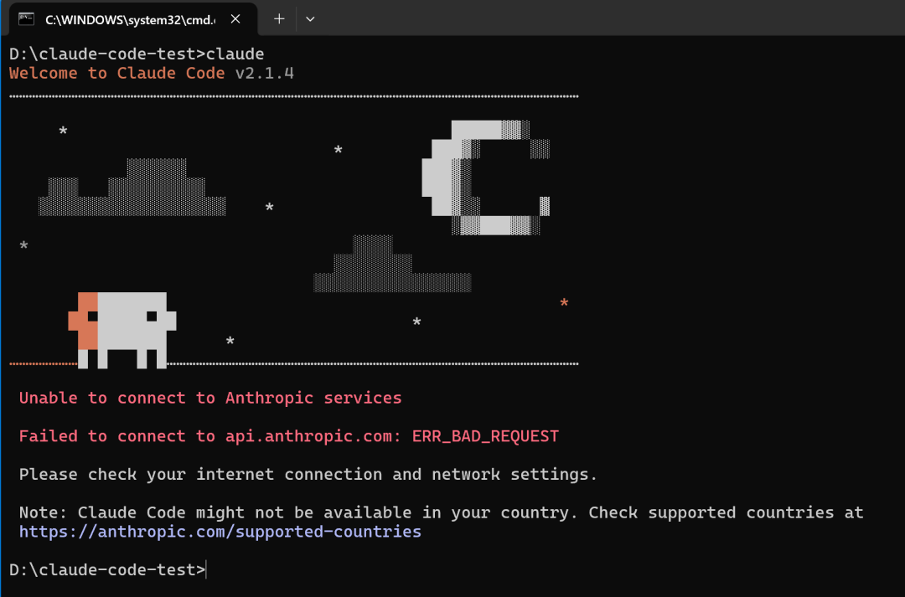
注：claude 是不允许中国大陆ip使用的，初次安装会链接官网进行登入验证。
4. 跳过官方的登入验证。
要跳过上面截图中的官方验证也很简单，只需要在你的c盘用户下的.claude.json文件，添加如下配置：
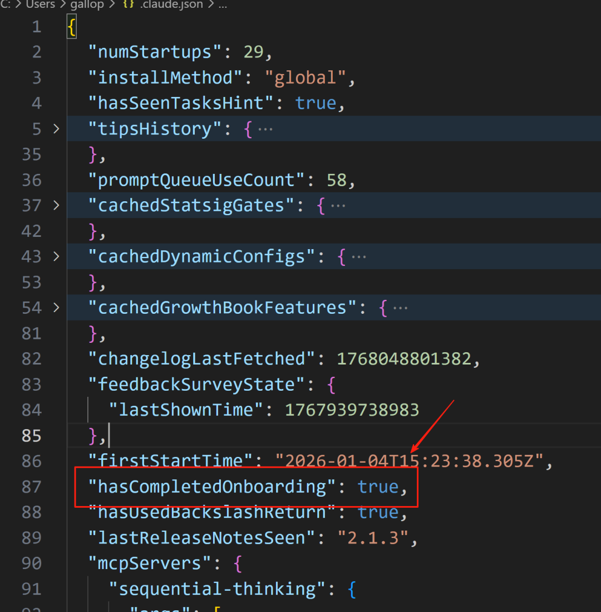
文本内容：
"hasCompletedOnboarding": true5. 关闭窗口，重新用命令行窗口打开目录，输入claude，即可跳过官方的登入验证。
第三阶段：安装cc-switch
cc-switch 可以方便的对接入claude code的大模型进行管理和切换。
1. 下载和安装
github地址：https://github.com/farion1231/cc-switch
目前最新的版本是v3.9.1
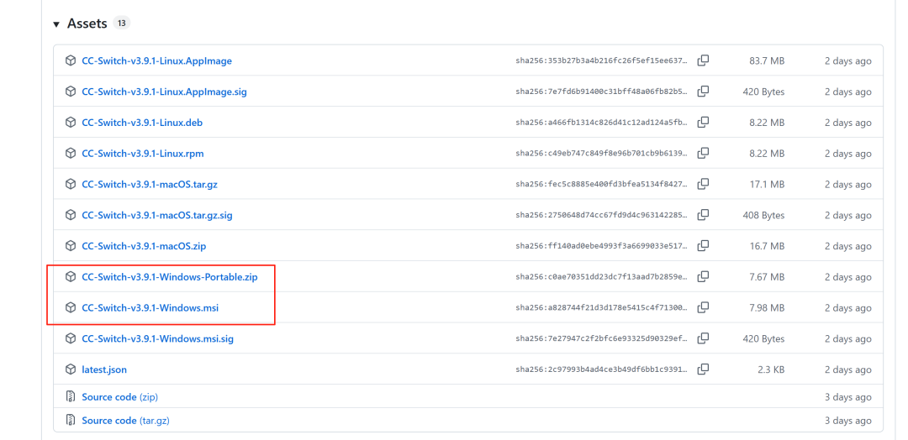
有安装版的和免安装版的，两个都可。
2. 在cc-switch 界面设置大模型
cc-switch目前支持对Claude、Codex、Gemini三款ai编程工具进行大模型管理，截图如下：
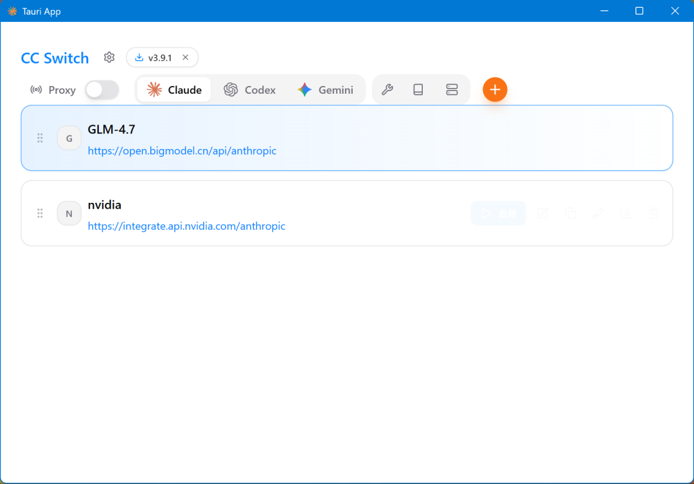
点击“+”可添加大模型，目前支持市面上的热门大模型配置，也支持自定义配置：
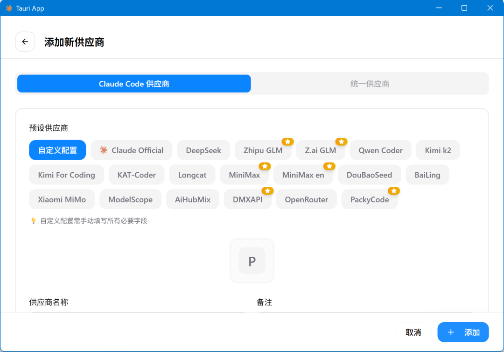
选择“Zhipu GLM”,输入API Key、请求地址及配置模型，即可添加成功：
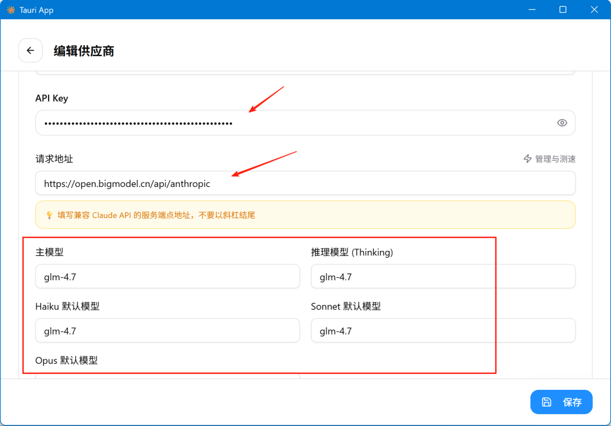
3. 测试claude是否配置成功
用命令行重新进入测试目录，输入claude
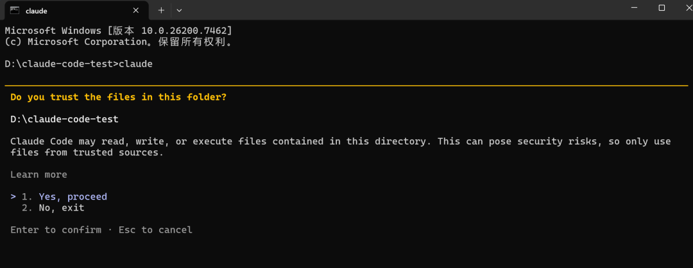
点击“yes”
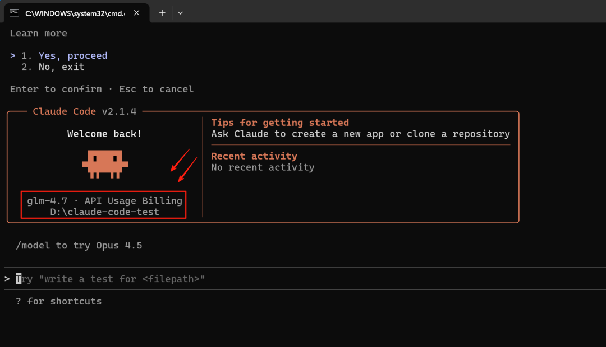
成功安装claude code并配置好GLM-4.7大模型。
第四阶段：claude code基本使用
对于claude code的基本使用，其实官方已经有很详细的文档了，这里给出“常见工作流程”的文档链接：
https://code.claude.com/docs/zh-CN/common-workflows
把这个文档看完，基本就可以把claude code的使用起来了。
1. claude code的MCP管理
输入/mcp,可以查看你目前可用的mcp有哪些，
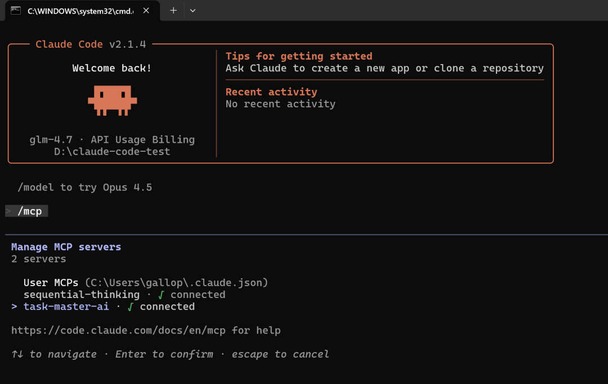
但好像这里没法添加mcp，要添加mcp只能自己去.claude.json文件配置，截图如下：
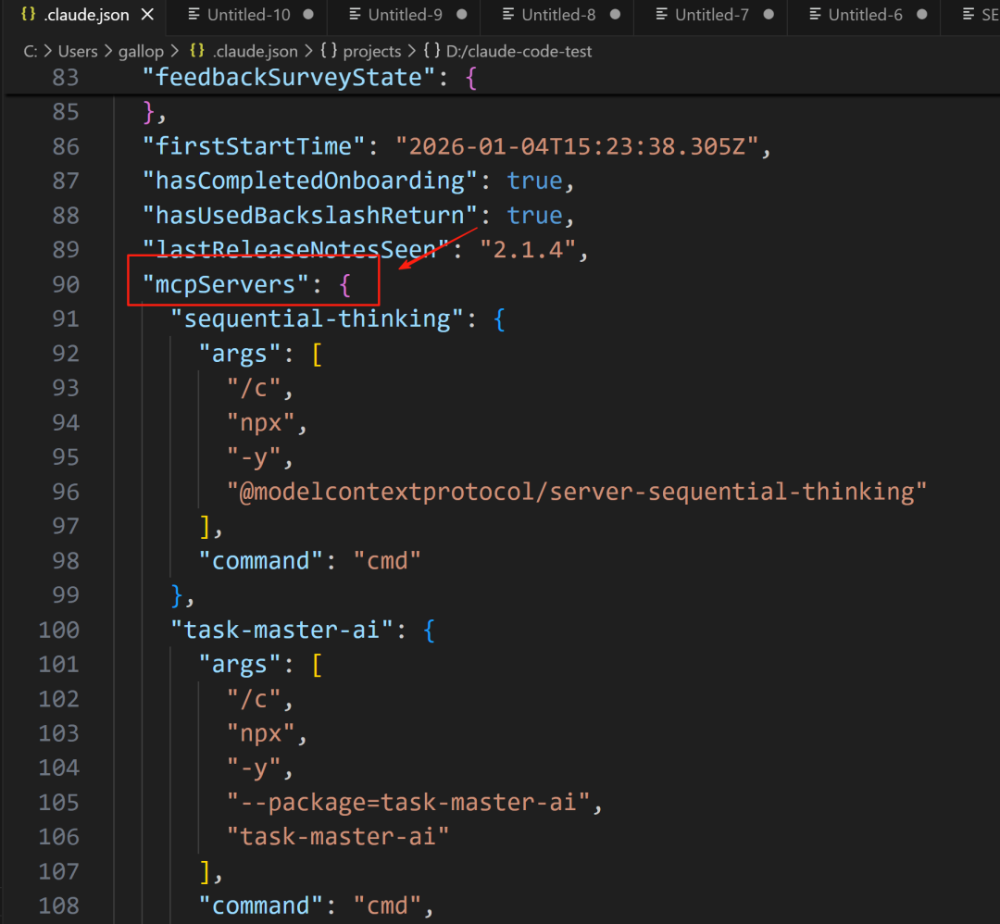
所以我这里使用cc-switch来管理mcp，很方便：
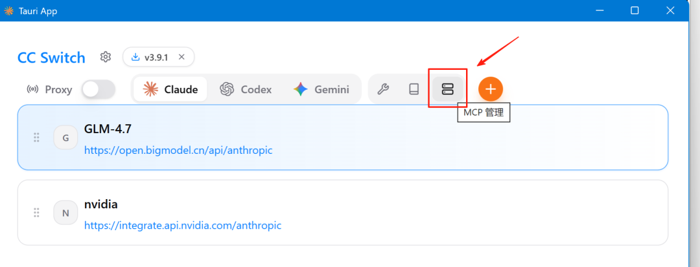
点击mcp管理按钮，进入管理界面：
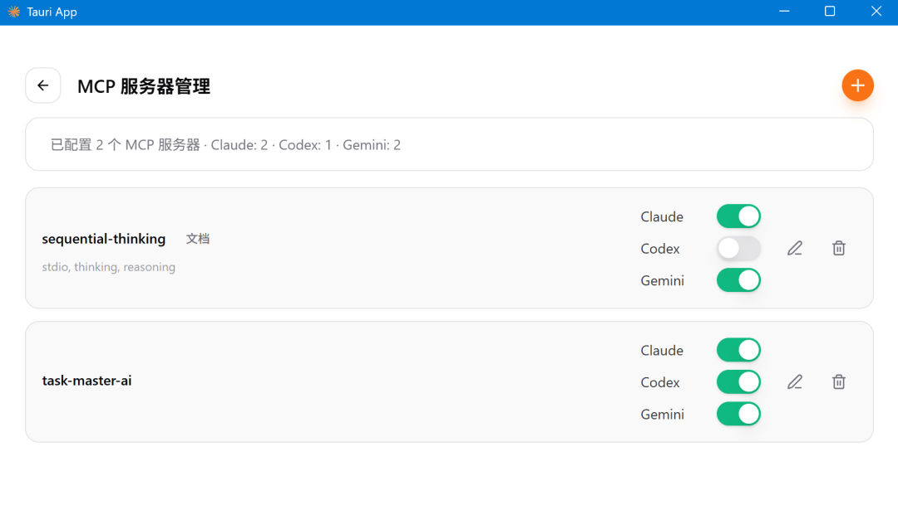
我目前就添加了sequential-thinking和task-master-ai两个mcp。
2. 在claude code 添加skill
skill 可以说是claude一大绝招，除了使用官方或别人创建好的skill外，你还可以根据自己的实际需求创建一个新的skill，官方提供了一个创建skill的skill，使用步骤如下：
把官方的skill-creator整个目录拷贝到你项目工程根目录下的.claude\skills路径下
重新打开命令行窗口，启动claude，就可以用简单的一句“我想创建一个新的skill”来创建一个新的skill，它会引导你，并提问这个新的skill需要完成一些什么功能，最终会自动帮你创建一个新的skill。
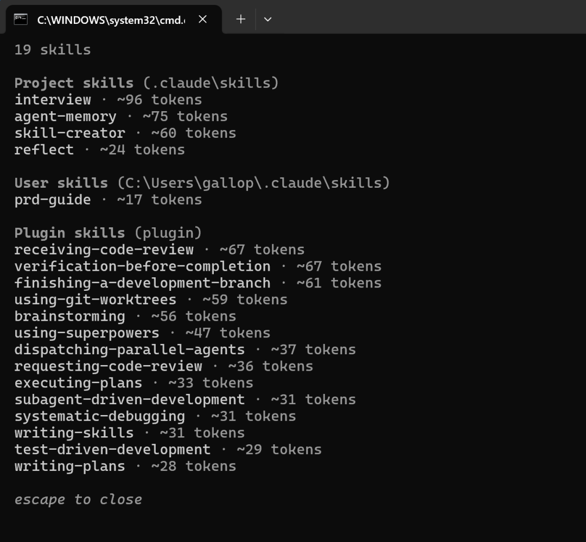
3. 在claude code 创建subAgent
subAgent也是claude很重要的一个功能，它可以将一个任务拆分成几个子任务，然后将子任务分配给不同的agent执行，每个agent都有独立的上下文，不互相影响，这样会提高任务完成的效率和效果。
在claude code已经内置了创建subAgent的工具，只有输入/agents 命令就可以查看目前存在的agent列表及新增一个agent。
我目前尝试创建了几个subagent：
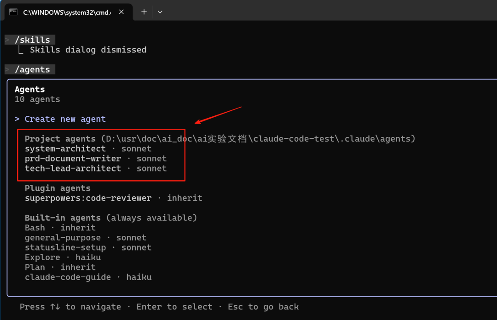
4. CLAUDE.md
当你第一次在一个工程项目代码目录下启动claude时，需要输入/init命令，进行初始化。
初始化完后，claude会在项目根目录生成一个CLAUDE.md，它会记录你这个项目代码的基本信息：包括项目概览、使用的技术栈、模块结构等有关信息。
初次使用claude code心得
1. 初步体验下来，claude code 确实好用，用同样的GLM-4.7 ，比Trae好用一个档次，简单的Prompt就可以意会你的意图。
2. 如果是团队开发，可以好好利用CLAUDE.md，将团队开发规范文档抛给它阅读理解，并记录在CLAUDE.md中，这样团队的所有成员在使用claude code的时候都会遵循同样的开发规范。
3. 把CLAUDE.md、skill、subAgent玩明白，玩顺溜了，再加上几个好用的MCP，你的代码效率肯定会飞起的，不说提升10倍，3~5倍应该有的吧。
下面是我在实际项目中使用的CLAUDE.md，部分截图：
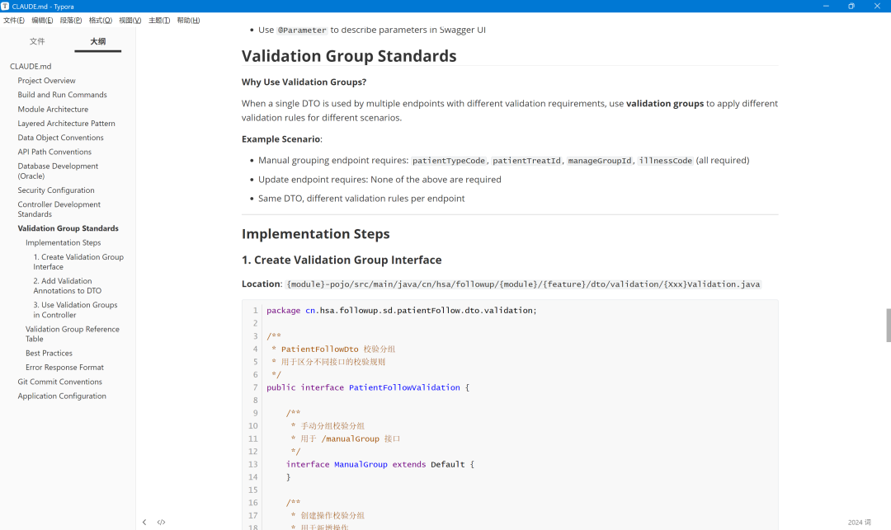
这个是我再跟ai对话完成一个符合规范的接口字段校验的代码后，叫它总结并记录在CLAUDE.md中，下次想对某个新增接口增加字段校验，只需要简单的描述，大模型就可以按照此规范完成一个完美的接口字段校验代码的生成。
4. 周末用claude code + taskmaster 在开发一个fastddd 后端开发集成框架，进展还挺顺利的，有空再写一篇文章介绍一下。贴一下周末使用的token量截图：
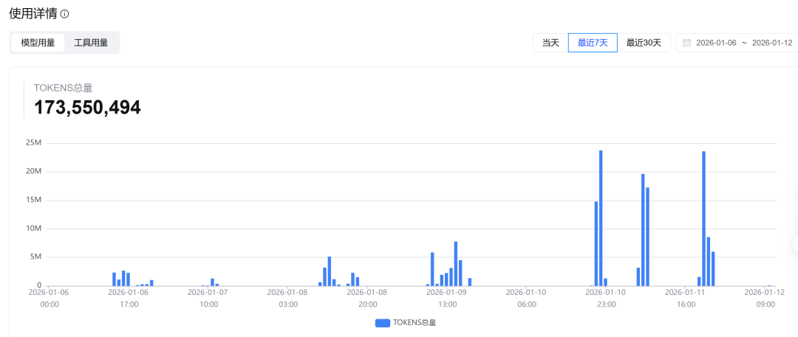
因为好用，所以多用了一下
宝子们，赶快使用起来吧！
如果本文对你有帮助，不妨点个免费的赞和收藏备用。
👇 关注Gallop，让AI提升你的效率

👉 添加我的微信（gallop_liu），备注“加群”，交流并分享个人的一些资料。
程序猿的养生茶：
胎菊8颗+玫瑰6颗+枸杞少许
夏天胎菊多一些，枸杞少一些，冬天则相反